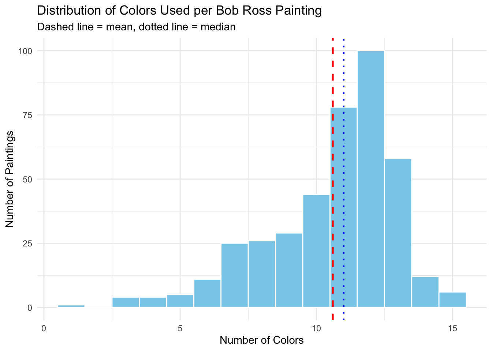
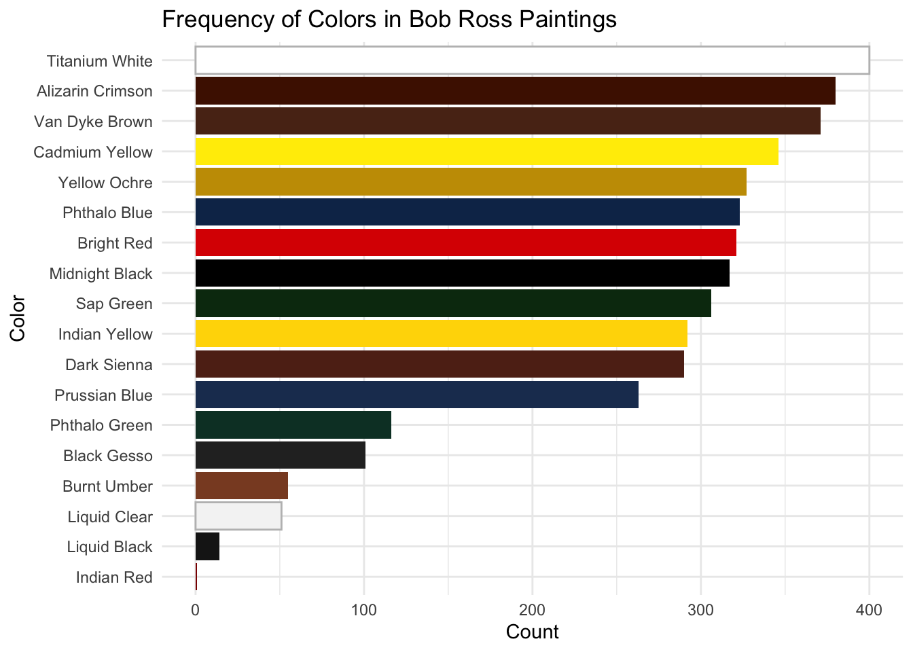
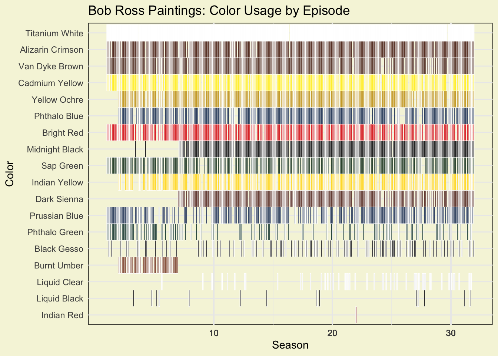
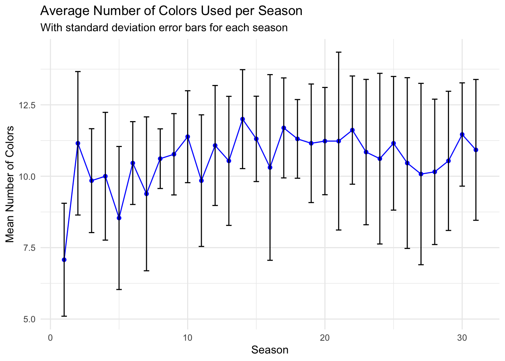

Bob Ross is known for his calming painting style and consistent visual themes. This case study explores how Bob Ross used color across The Joy of Painting series, analyzing color frequency, palette complexity, and trends over time. The goal is to identify patterns in color usage and determine whether Bob Ross’s palettes evolved across seasons.
Exploratory Data Analysis
Show code
# Summary Stats Tablesummary_stats <- bob_ross |>summarize(`Number of Seasons`=n_distinct(season),`Episodes per Season`=n_distinct(episode),`Number of Paintings`=n(),`Total Colors`=length(color_cols),`Minimum Colors Used`=min(num_colors),`Maximum Colors Used`=max(num_colors),`Average Colors Used`=round(mean(num_colors), 2))summary_stats_flipped <- summary_stats |>pivot_longer(cols =everything(),names_to ="Metric",values_to ="Value" )summary_stats_flipped |>kable()
Metric
Value
Number of Seasons
31.00
Episodes per Season
13.00
Number of Paintings
403.00
Total Colors
18.00
Minimum Colors Used
1.00
Maximum Colors Used
15.00
Average Colors Used
10.61
The dataset contains 31 seasons of The Joy of Painting, each consisting of a consistent 13 episodes, for a total of 403 paintings. Across the series, Bob Ross used a palette of 18 distinct colors. Individual paintings used between 1 and 15 colors, with an average of approximately 10.61 colors per episode. This suggests a stable painting style with occasional minimalist and more complex palettes. Notably, one painting used only a single color: Van Dyke Brown.
Show code
# Histogram ggplot(bob_ross, aes(num_colors)) +geom_histogram(bins =15,fill ="skyblue",color ="white") +geom_vline(xintercept =mean(bob_ross$num_colors),linetype ="dashed",color ="red",linewidth =0.8) +geom_vline(xintercept =median(bob_ross$num_colors),linetype ="dotted",color ="blue",linewidth =0.8) +labs(title ="Distribution of Colors Used per Bob Ross Painting",x ="Number of Colors",y ="Number of Paintings",subtitle ="Dashed line = mean, dotted line = median") +theme_minimal()

The distribution of palette size is left-skewed, with most paintings using between 12 colors. A small number of episodes use unusually few or many colors, suggesting modest variability. One extreme outlier is only 1 color being used, as mentioned prior, this was double checked and yes one bob Ross painting only used one color.
Show code
color_counts <- bob_ross_long |>filter(used) |>count(color, sort =TRUE) |>left_join(color_hex_manual, by ="color") # now hex column exists# Plot with actual colorsggplot(color_counts, aes(x =reorder(color, n), y = n, fill = hex)) +geom_col(aes(color =ifelse(color %in%c("Titanium White", "Liquid Clear"), "highlight", NA)),size =1.2) +# thickness of borderscale_fill_identity() +# use actual hex colorsscale_color_manual(values =c(highlight ="gray"), na.value =NA, guide ="none") +# black borderlabs(title ="Frequency of Colors in Bob Ross Paintings", x ="Color", y ="Count", color ="") +theme(legend.position ="none") +coord_flip()+theme_minimal()

This visualization above illustrates the frequency of each color across all episodes, highlighting a small core palette that defines Bob Ross’s artistic style.
A small set of colors consistently appears across 80% of paintings, forming a ‘core palette’ that anchors Bob Ross’s style: “Titanium White” - “Alizarin Crimson” - “Van Dyke Brown”, “Cadmium Yellow”, “Yellow Ochre”, “Phthalo Blue”, “Bright Red”
Each line represents a single use of a color in a painting, with the paintings arranged chronologically along the X-axis.

From this visualization, we can observe several patterns in Bob Ross’s palette choices:
By the end of Season 6, Ross gradually shifted from using Burnt Umber toward Dark Sienna.
The plot reveals which colors he used least frequently and highlights the specific episodes where they appeared.
Titanium White and Liquid Clear are visually similar, allowing Ross to substitute one for the other without significantly affecting the overall aesthetic. Similarly, Liquid Black and Black Gesso occasionally served as alternatives to Midnight Black.
Rare colors, such as Indian Red, were used very sparingly; in this case, it appears in only one painting, Autumn Images (Season 22, Episode 1).
Palette Complexity Over Time
Question: Did Bob Ross’s palette become more or less complex over the years?
Show code
# Linear trend by seasonlm_season <-lm(num_colors ~ season, data = bob_ross)summary(lm_season)
Call:
lm(formula = num_colors ~ season, data = bob_ross)
Residuals:
Min 1Q Median 3Q Max
-9.605 -1.260 0.722 1.675 4.348
Coefficients:
Estimate Std. Error t value Pr(>|t|)
(Intercept) 9.85707 0.23932 41.188 < 2e-16 ***
season 0.04677 0.01306 3.583 0.000382 ***
---
Signif. codes: 0 '***' 0.001 '**' 0.01 '*' 0.05 '.' 0.1 ' ' 1
Residual standard error: 2.344 on 401 degrees of freedom
Multiple R-squared: 0.03101, Adjusted R-squared: 0.0286
F-statistic: 12.83 on 1 and 401 DF, p-value: 0.000382
Show code
# Plot trendbob_ross %>%group_by(season) %>%summarize(avg_colors =mean(num_colors), sd_colors =sd(num_colors)) %>%ggplot(aes(x = season, y = avg_colors)) +geom_line() +geom_point() +geom_ribbon(aes(ymin = avg_colors - sd_colors, ymax = avg_colors + sd_colors), alpha =0.2) +labs(title ="Average Number of Colors per Season", x ="Season", y ="Avg # Colors")
Intercept (9.857): This is the estimated average number of colors in season 0 (essentially your baseline)
Slope (0.0468): On average, Bob Ross increased the number of colors by ~0.047 per season. Over 31 seasons, that’s roughly 1.45 extra colors from the first to the last season.
Model Fit
R-squared = 0.031: Only ~3% of the variance in number of colors is explained by season. So while the trend is statistically significant, it’s not a very strong effect.
p-value = 0.000382: The trend is significant; the increase in colors across seasons is unlikely to be due to random chance.
Residuals: Mostly centered around 0, with some paintings using far fewer or far more colors than predicted.
Takeaway
Bob Ross slightly increased the number of colors used as seasons progressed.
Most of the variability in palette size comes from episode-level differences, not from the season alone.
Text Analysis
Show code
library(tidytext)title_words <- bob_ross %>%select(season, painting_title) %>%unnest_tokens(word, painting_title) %>%anti_join(stop_words, by ="word") %>%# removes common stop words automaticallycount(word, sort =TRUE)title_words %>%slice_max(n, n =20) %>%ggplot(aes(x =reorder(word, n), y = n)) +geom_col(fill ="steelblue") +coord_flip() +labs(title ="Most Common Words in Bob Ross Painting Titles",x ="Word", y ="Frequency") +theme_minimal()
To complement the color analysis, a brief text analysis was conducted on Bob Ross’s painting titles. Titles were tokenized into individual words, common stop words were removed, and word frequencies were calculated.
The most frequently occurring words reflect dominant themes in Bob Ross’s work, particularly landscape features such as mountain, winter, and autumn, as well as seasonal and atmospheric elements. This reinforces the visual findings from the color analysis, where natural earth tones and cool blues appear consistently across the series.
One notable result of the text analysis is the high frequency of the word “oval.” This does not refer to a landscape feature, but rather to a recurring compositional style used by Bob Ross, in which scenes were painted within an oval frame or vignette. These “oval” paintings appear repeatedly across multiple seasons, which explains the prominence of the term in painting titles.
The word cloud provides an exploratory visualization of title vocabulary, highlighting the prominence of recurring natural imagery. Together, these results suggest that Bob Ross’s color choices and thematic language align closely, reinforcing a consistent aesthetic and narrative style throughout The Joy of Painting.
Seasonal / Temporal Patterns
QUESTIONS:
Does the number of colors used change across seasons?
Do later seasons show more palette complexity?
Because the distribution of the number of colors used per painting is slightly left-skewed (mean < median), both nonparametric correlation and count-based regression models are used alongside standard linear regression to assess temporal trends.
Seasonal Averages
Show code
# Seasonal Averagesseason_stats <- bob_ross |>group_by(season) |>summarise(mean_colors =mean(num_colors),sd_colors =sd(num_colors))library(ggplot2)ggplot(season_stats, aes(season, mean_colors)) +geom_line(color ="blue") +# specify a colorgeom_point(color ="blue") +geom_errorbar(aes(ymin = mean_colors - sd_colors,ymax = mean_colors + sd_colors ), width =0.4, color ="black") +# optional: width for error barstheme_minimal() +labs(title ="Average Number of Colors Used per Season",x ="Season",y ="Mean Number of Colors",subtitle ="With standard deviation error bars for each season" )

Interpretation: Average palette size shows a slight upward trend over time, though variability within seasons remains substantial. This suggests that while Bob Ross gradually expanded his color usage, individual episodes still varied considerably.
Nonparametric Trend Test
To assess monotonic change without assuming normality, a Kendall rank correlation was used
Kendall's rank correlation tau
data: bob_ross$season and bob_ross$num_colors
z = 4.3348, p-value = 1.459e-05
alternative hypothesis: true tau is not equal to 0
sample estimates:
tau
0.1564051
Result: The Kendall test indicates a statistically significant positive association between season and palette size, suggesting that later seasons tend to use slightly more colors.
Regression Analysis
Show code
lm_model <-lm(num_colors ~ season, data = bob_ross)summary(lm_model)
Call:
lm(formula = num_colors ~ season, data = bob_ross)
Residuals:
Min 1Q Median 3Q Max
-9.605 -1.260 0.722 1.675 4.348
Coefficients:
Estimate Std. Error t value Pr(>|t|)
(Intercept) 9.85707 0.23932 41.188 < 2e-16 ***
season 0.04677 0.01306 3.583 0.000382 ***
---
Signif. codes: 0 '***' 0.001 '**' 0.01 '*' 0.05 '.' 0.1 ' ' 1
Residual standard error: 2.344 on 401 degrees of freedom
Multiple R-squared: 0.03101, Adjusted R-squared: 0.0286
F-statistic: 12.83 on 1 and 401 DF, p-value: 0.000382
Show code
pois_model <-glm(num_colors ~ season, data = bob_ross, family =poisson())summary(pois_model)
Call:
glm(formula = num_colors ~ season, family = poisson(), data = bob_ross)
Coefficients:
Estimate Std. Error z value Pr(>|z|)
(Intercept) 2.290002 0.031887 71.815 < 2e-16 ***
season 0.004412 0.001711 2.579 0.00992 **
---
Signif. codes: 0 '***' 0.001 '**' 0.01 '*' 0.05 '.' 0.1 ' ' 1
(Dispersion parameter for poisson family taken to be 1)
Null deviance: 242.75 on 402 degrees of freedom
Residual deviance: 236.10 on 401 degrees of freedom
AIC: 1925.4
Number of Fisher Scoring iterations: 4
A linear regression yielded consistent results, though season explained only ~3% of the variance, suggesting that while the trend is statistically significant, the practical effect size is modest.
Because the response variable is a count and slightly skewed, a Poisson model was also fit: A Poisson regression model was used to assess changes in palette size over time. Results indicate a statistically significant positive effect of season on the expected number of colors used per painting (β = 0.0044, p = 0.0099), corresponding to an approximate 0.44% increase in palette size per season. This result is consistent with the linear model, reinforcing the robustness of the observed trend. These findings suggest a gradual but modest increase in palette complexity across the series.
This visualization shows the relationship between season number and the number of colors used per painting. Individual points represent paintings, while the smooth curve reflects a Poisson regression fit appropriate for count data. The dashed line indicates the mean palette size. Although the regression reveals a statistically significant upward trend, the slope is shallow, reinforcing that changes in palette complexity over time are gradual rather than dramatic.
Conclusion
This case study examined how Bob Ross used color throughout The Joy of Painting, with a focus on palette composition, frequency, and temporal change across seasons. The analysis shows that Ross relied on a highly consistent core palette, anchored by Titanium White and several earth tones, which appeared in the majority of paintings. This stability underscores the importance of technique, layering, and composition in his work rather than frequent changes in color selection.
While palette usage was largely consistent, both descriptive and inferential analyses reveal a small but statistically significant increase in palette complexity over time. Linear, nonparametric, and Poisson regression models all indicate that later seasons tend to use slightly more colors per painting. However, season explains only a modest portion of the total variation, suggesting that most differences in palette size occur at the episode level rather than as part of a strong long-term trend.
Text analysis of painting titles further reinforces these findings. Frequently occurring words such as mountain, winter, and autumn highlight Ross’s persistent focus on natural landscapes, while the prominence of the word oval reflects a recurring compositional format rather than a thematic subject. Together, the text and color analyses suggest a coherent artistic identity that remained stable across decades.
Overall, Bob Ross’s work demonstrates consistency with subtle evolution: a recognizable and disciplined palette paired with gradual experimentation rather than dramatic stylistic shifts. This balance likely contributed to the enduring visual identity and appeal of The Joy of Painting.